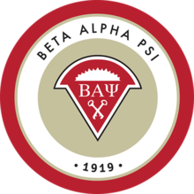

All About Beta Alpha Psi!
At the University of Nebraska - Omaha, there are many clubs one can join. Beta Alpha Psi is an international honors organization for financial information students and professionals. Beta Alpha Psi, as an organization, was founded in 1919. There are over 300 chapters on college and university campuses with over 300,000 members initiated since Beta Alpha Psi's formation. Specifically at UNO, about 40 members are actively involved. They hold a variety of events every Friday night during the school semester. These events can range from visiting local accounting firms or attending career fairs in the Omaha area. Beta Alpha Psi is also a great organization to network with other students who are pursuing the same career paths as you!
There are requirements that members have to follow in order to be a part, or member, of Beta Alpha Psi. These include:
--Have at least a 3.5 GPA
--Have taken or are enrolled in at least 3 upper level accounting classes
--Have participated in at least 6 hours of community service
To get more information about the next meetings or updates check out their Facebook page. Click Here!